Pius Amartey
Arduino
About Project
This project leverages Arduino for IT Security, focusing on the development of a security device utilizing Tinkercard.
The device is designed to enhance general security measures by detecting motion within its field and alerting the user accordingly.
Programmed in C++, this security system functions as an alarm system, promptly notifying users when an object enters a specified area without their knowledge,
thereby enhancing security measures.
 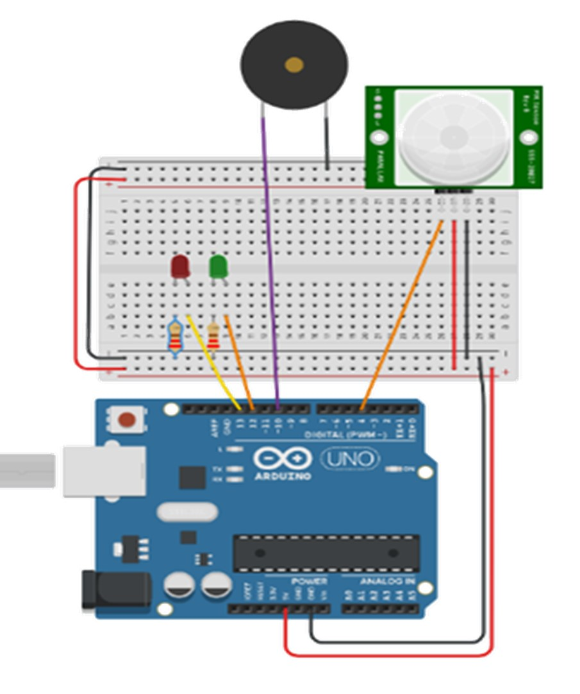
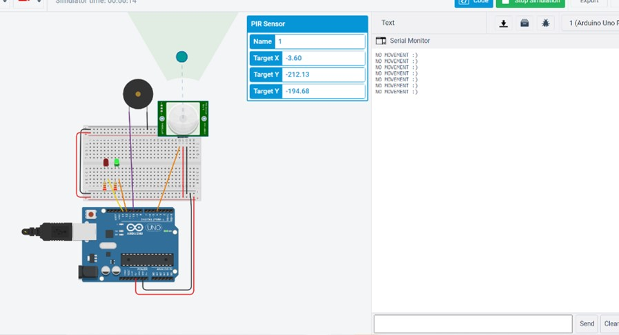
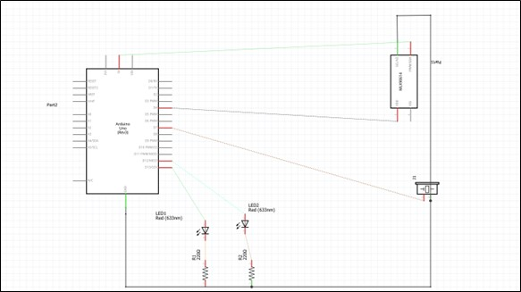
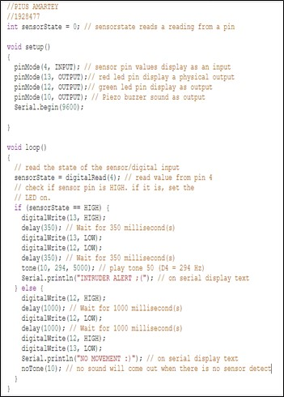
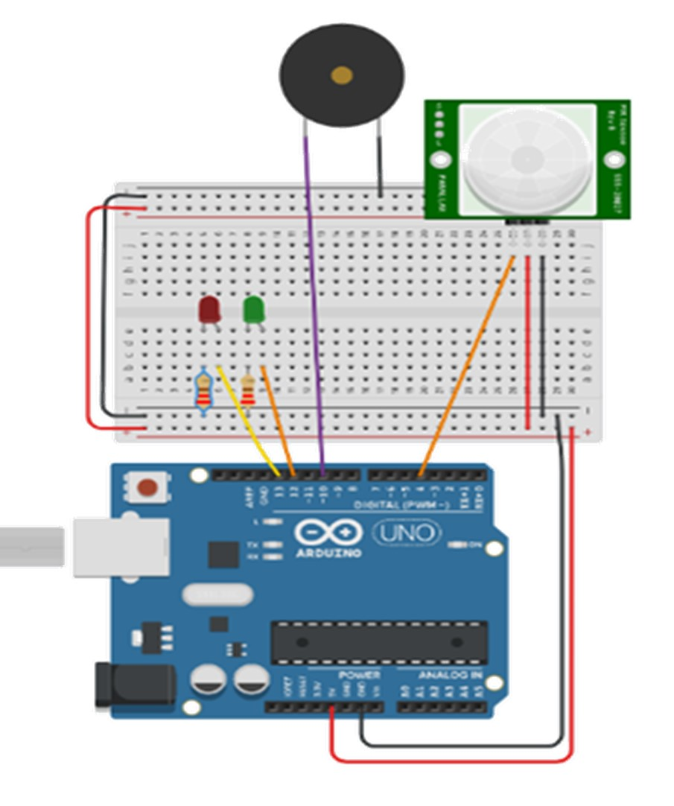
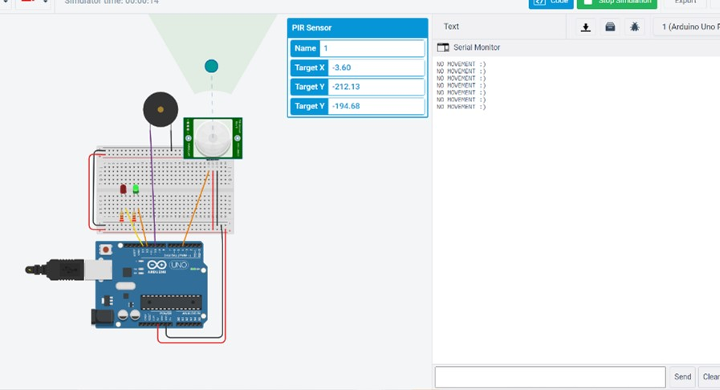
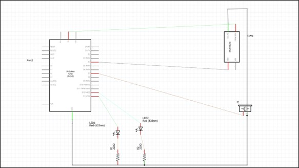
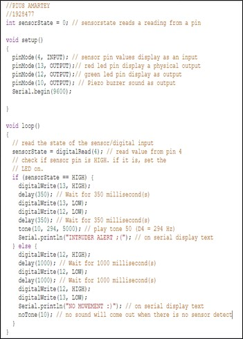
Skills
- Microcontroller boards using the C++ language, including utilizing Arduino-specific libraries and functions for hardware interaction.
- Skills in circuit design and assembly using Arduino components
- Experience in integrating multiple hardware components into a functional system
- IT security principles and concepts
- Proficiency in Arduino programming and microcontroller boards
About Project
This project leverages Arduino for IT Security, focusing on the development of a security device utilizing Tinkercard. The device is designed to enhance general security measures by detecting motion within its field and alerting the user accordingly. Programmed in C++, this security system functions as an alarm system, promptly notifying users when an object enters a specified area without their knowledge, thereby enhancing security measures.
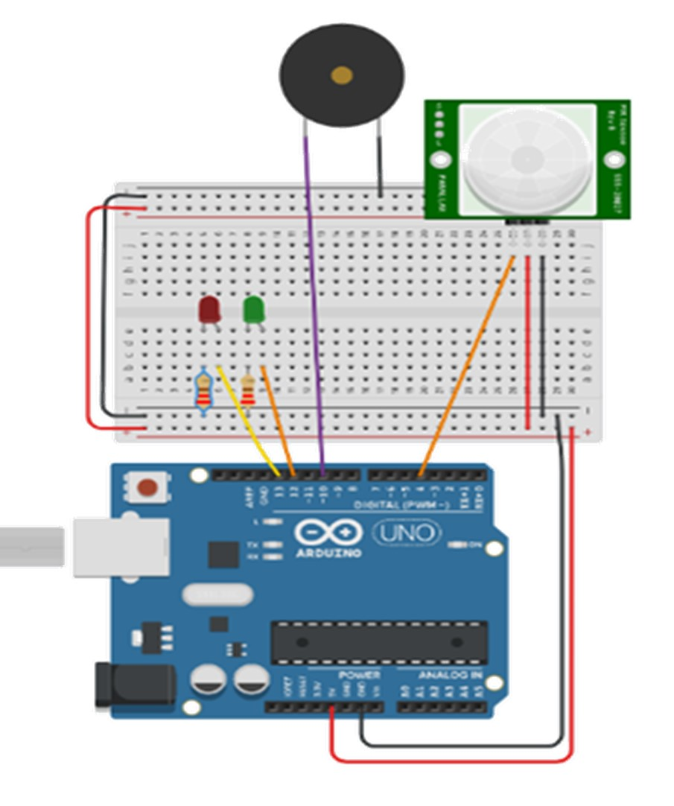
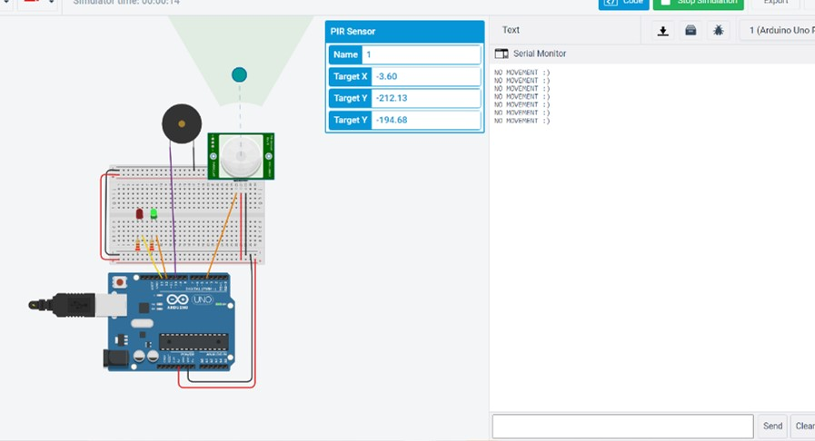
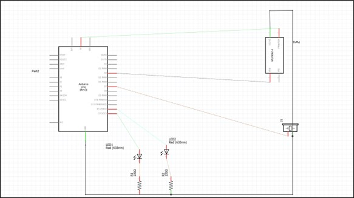
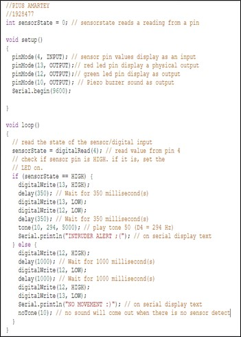
Skills
- Microcontroller boards using the C++ language, including utilizing Arduino-specific libraries and functions for hardware interaction.
- Skills in circuit design and assembly using Arduino components
- Experience in integrating multiple hardware components into a functional system
- IT security principles and concepts
- Proficiency in Arduino programming and microcontroller boards